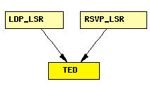

File: Network/TED/TED.ned
C++ definition: click here
Traffic Engineering Database. Stores network topology with detailed link information, including total and reserved bandwidths.
TED is filled in and kept up-to-date via link state routing protocols, like LinkStateRouting or (in the future) OSPF-TE.
TED exposes several public methods for querying the current network state and allows RSVP and individual applications to calculate feasible LSPs meeting the chosen bandwidth criteria.
The following diagram shows usage relationships between modules, networks and channels. Unresolved module (and channel) types are missing from the diagram. Click here to see the full picture.
If a module type shows up more than once, that means it has been defined in more than one NED file.
| LDP_LSR | An LDP-capable router. |
| RSVP_LSR | An RSVP-TE capable router. |
simple TED endsimple